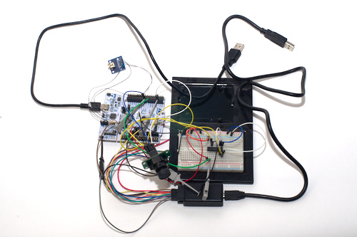
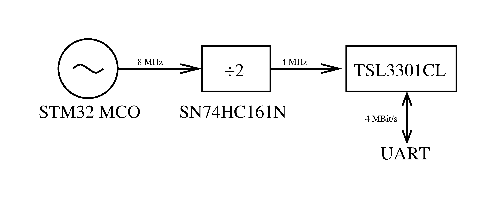

This is a fast line scan camera implemented with an AMS TSL3301CL sensor IC. The camera can be used to make high speed swept 2D images, as in factory line inspection, or as a geometry acquisition device, as in line following robots or range finders.
The line scan camera assembly is an AMS TSL3301CL mounted on a PCB with an S-mount lens. The assembly costed $31 USD in parts and PCB. For prototyping control, I used an STM32F103RB and a SN74HC161N counter.
The TSL3301CL is a 300-dpi linear optical sensor array with integrated 8- bit analog-to-digital converters. The optical array consists of 102 pixels and is 8.573 mm wide. The sensor has a 1 MHz pixel rate, which means that the sensor is capable roughly up to 9.8 kfps (1 MHz / 102 pixels). Interestingly, a variant of this, the TSL1401CL, exists without the integrated high speed ADC. It seems that this cheaper variant is capable of a higher frame rate of 63 kfps (8 MHz / 128 pixels), but it would depend on the quality of integration of an external ADC.
The PCB contains nothing more than the IC itself, decoupling capacitors, and a connector. This simplicity is fine if the camera is right next to the driving device, but it might have signal integrity problems if it was mounted far away from the driving device with long wires. Perhaps, I would include differential drivers and receivers in a robust implementation. Soldering the IC to the PCB was difficult because the IC would drift on molten solder and become misaligned, even with my reflow oven. I had to manually align it afterward with hot air and a few careful nudges. The PCB is 18 mm by 36 mm in size.
The lens assembly is a standard S-mount lens, also known as an M12 lens. These types of lenses are quite cheap an popular, since they are widely used for security cameras. The lens mount screws directly onto the PCB, and the lens is easily swappable. I did not choose the lens very well and ended up wasting about 20% of the pixels through bad vignetting. Still, the lens assembly was usable and could produce reasonable images.
For control, I used an STM32F103RB microcontroller, which is simply what I had on hand. According to the TSL3301CL datasheet, all I needed was a USART device to drive it. However, the TSL3301CL required extra clocks in addition to the ones used for communication for operation, which was messy to implement with the USART device clock line.

Line scan camera, STM32 board, SN74HC161N counter, and bootleg logic analyzer.Instead of using USART, I decided to drive the TSL3301CL sensor with a continuous clock and to communicate with the sensor using UART. This gave me easy communication compatible with the microcontroller without needing to worry about clocking. The requirement was that this device clock had to be phase-locked with the UART module clock and be the same as the UART bit rate. As a result, I derived the device clock by taking the microcontroller's high frequency clock output and dividing it down with a counter IC. Due to my clocking scheme, the highest UART bit rate I could get was 4 Mbit/s. The microcontroller output 8 MHz, which I divided down to 4 MHz with my SN74HC161N counter. Perhaps I should be using a CPLD to get the most out of this sensor.

Derivation of frequency used to drive USART interface.The microcontroller's software was divided into two layers. The first layer implemented the low level USART interface exactly as described in the TSL3301CL datasheet. The second layer provided a higher level interface to applications, which boiled down to a function that takes a picture with a certain exposure time speed and other functions that tweak sensor settings.
#ifndef CAMERA_H_
#define CAMERA_H_
#include <stdint.h>
#include "tsl3301.h"
typedef struct config {
uint8_t leftOffset; uint8_t leftGain;
uint8_t centerOffset; uint8_t centerGain;
uint8_t rightOffset; uint8_t rightGain;
uint8_t sleeping;
} Config;
struct camera {
uint8_t (*initialize)(TSL3301Handle *handle);
void (*reset)(void);
void (*set_config)(Config config);
Config (*get_config)(void);
void (*sleep)(void);
void (*wake)(void);
void (*set_gain)(float gain);
void (*set_gain_code)(uint8_t gainCode);
void (*set_offset)(uint8_t offset);
uint8_t (*capture)(uint16_t shutter_ms, uint8_t pixels[102]);
};
extern const struct camera Camera;
#endif /* CAMERA_H_ */
Listing of application level interface. Maybe I got carried away with function
pointers.
In addition to the embedded software, I also wrote a quick MATLAB program that received image data from the microcontroller and plotted the data with a waterfall plot. The microcontroller takes pictures periodically and pushes the data to my MATLAB program through a USB serial connection. Each row of pixels is plotted as a row of pixels in the waterfall plot. Coincidentally, if one physically sweeps the camera at a constant rate, one can obtain a 2D image that is displayed on the waterfall plot.
Written on the 4th of Autumn in 2018.
{kind=link}
{kind=link}
{kind=link}
{kind=link}
{kind=link}
{kind=link}
{kind=link}
{kind=link}
{kind=link}
{kind=link}
{kind=link}
{kind=link}
{kind=link}